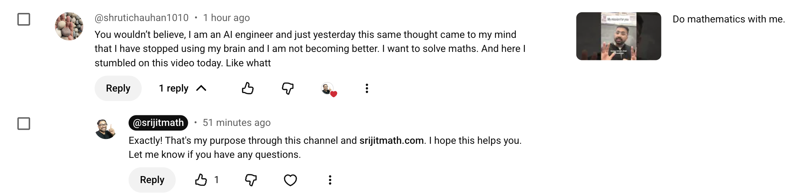
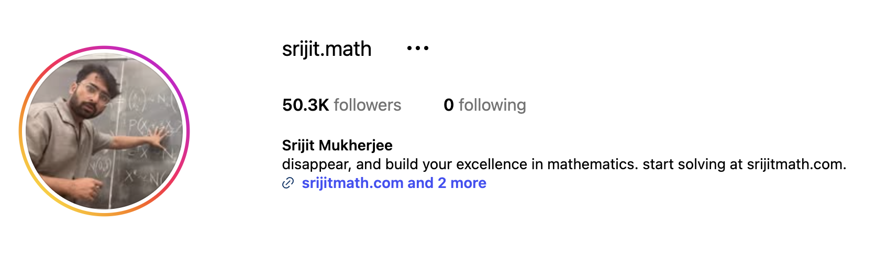

Srijit Mukherjee
AI PhD student · Electrical Engineering · Penn State
and a teacher.
11 years of teaching mathematics
MIT, 2025: ChatGPT users → weakest brain connectivity
I am not alone.

1.6M
machine learning engineers
today
1 dot = 10,000 engineers
They use AI every day. They need maths every day.
2025 · built for me
2026 · open to the world
AI removes the bottleneck.
problems · solutions · notes
One knowledge graph.
35 topics · 1,883 problems
problem 14 · random variables
X ~ Exp(λ). Find P(X > 2).
tap to take a photo
P(X > 2) = ∫2∞ λe−λx dx
= [−e−λx]2∞
= e−2λ
✕ Too blurry. Please retake.
✓ Clear. Reading it…
P(X > 2) = ∫2∞ λe−λx dx
= [−e−λx]2∞
= e−2λ
Submit
1Solve by hand
2Snap
3Blurry? Retake.
4AI → text
5Submit
V ▶ demo
Conversations with students
My problem-solving
My YouTube videos
my grade👏 8/10
Right answer. Why does step 2 hold?
studentX and Y are independent?
meGood. And if they weren't?
Deep thinking, back and forth.
V ▶ demo
One real learner
every 5 problems
strength = grades + discussions discussed with me

since · $0 spent on ads
Solve by hand.
Get graded.
Discuss with peers.
srijitmath.com
one student · one month · 55 problems
read 110 handwritten pages$0.03
grade 55 solutions in my voice$1.07
one student, one month≈ $1.10
A teacher's twin for $1.10 a month.
now
srijitmath.com
Learners$2.90 / month
Can't pay?free
next
The engine, for every teacher
Creators$2.90 / student / month
Teachers$2.90 / student / month
Universities plugs into Canvas$12 / student / term
per student, per month: costs $1.10 · sells for $2.90 · 62% margin
$20kbuild for every teacher
$15k3 university pilots
$10kfree for those who can't pay
$5kservers · privacy
12 months → 1,000 paying students · 3 university pilots · 750 learners free